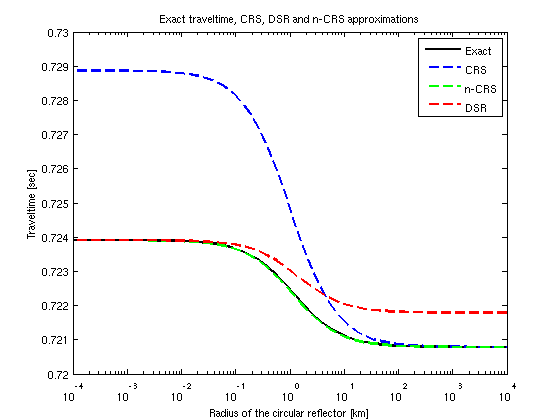
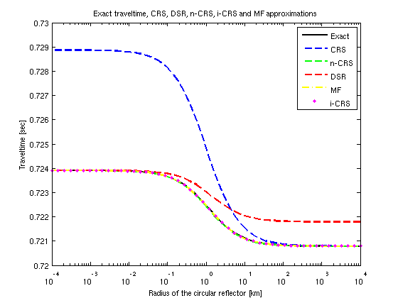
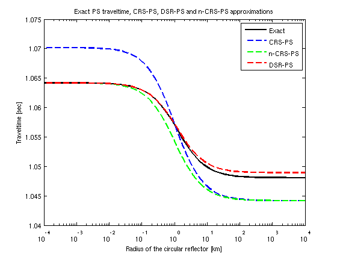

Check the idea that n-CRS sews two solutions: CRS and DSR
Contents
- Introduction
- Define working folder, add links to Library and SeisLab
- Define model parameters (See table 4.1):
- Set offset and midpoint displacement
- Part I: Calculate traveltimes of PP waves
- Part II: Find traveltime approximation for PP and PS waves
- Part III Compare approximations
- Part IV Compare approximations
- Part V Compare approximations
Introduction
Author: Abakumov Ivan
Publication date: 10th August 2016
Define working folder, add links to Library and SeisLab
clear; close all; clc; mlibfolder = '/home/zmaw/u250128/Desktop/MLIB'; path(path, mlibfolder); addmypath; current_folder = pwd;
Define model parameters (See table 4.1):
Rmin = 0.0001; % min radius of curvature (0.1 m) Rmax = 10000; % max radius of curvature (10000 km) R = logspace(log(Rmin)/log(10),log(Rmax)/log(10),50); TePP = zeros(size(R)); TePS = zeros(size(R)); T_CRS = zeros(size(R)); T_nCRS = zeros(size(R)); T_DSR = zeros(size(R)); T_MF = zeros(size(R)); T_iCRS = zeros(size(R)); T_DSR_PS = zeros(size(R)); T_CRS_PS = zeros(size(R)); T_nCRS_PS = zeros(size(R)); for i=1:length(R)
alpha = pi/6; % radian Rnip = 1.0; % km Rn = Rnip + R(i); % km Vp = 3.2; % km/s Vs = 1.8; % km/s modelPP = [alpha, Rnip, Rn, Vp, Vp]; modelPS = [alpha, Rnip, Rn, Vp, Vs];
Set offset and midpoint displacement
m = 0.2;
h = 0.4;
[M,H]=meshgrid(m,h);
Part I: Calculate traveltimes of PP waves
TePP(i) = Get_traveltime_2D_exact(M,H,modelPP);
TePS(i) = Get_traveltime_2D_exact(M,H,modelPS);
Part II: Find traveltime approximation for PP and PS waves
% PP approximations T_CRS(i) = Get_traveltime_2D_CRS(M, H, modelPP); T_nCRS(i) = Get_traveltime_2D_nCRS(M, H, modelPP); T_DSR(i) = Get_traveltime_2D_DSR_PS(M, H, modelPP); T_MF(i) = Get_traveltime_2D_MF(M, H, modelPP); T_iCRS(i) = Get_traveltime_2D_iCRS(M, H, modelPP); % PS approximations T_DSR_PS(i) = Get_traveltime_2D_DSR_PS(M, H, modelPS); T_CRS_PS(i) = Get_traveltime_2D_CRS_PS(M, H, modelPS); T_nCRS_PS(i) = Get_traveltime_2D_nCRS_PS(M, H, modelPS);
end
Part III Compare approximations
figure(1) semilogx(R, TePP, '-black', 'LineWidth',2); hold on semilogx(R, T_CRS, '--blue', 'LineWidth',2); semilogx(R, T_nCRS, '--g', 'LineWidth',2); semilogx(R, T_DSR, '--r', 'LineWidth',2); legend('Exact', 'CRS', 'n-CRS', 'DSR','Location','NorthEast'); % axis([0, 1.35, 0.35, 1.35]); xlabel('Radius of the circular reflector [km]') ylabel('Traveltime [sec]') title('Exact traveltime, CRS, DSR and n-CRS approximations') % Add manualy %point diffractor limit %plane reflector limit
Part IV Compare approximations
figure(2) semilogx(R, TePP, '-black', 'LineWidth',2); hold on semilogx(R, T_CRS, '--blue', 'LineWidth',2); semilogx(R, T_nCRS, '--g', 'LineWidth',2); semilogx(R, T_DSR, '--r', 'LineWidth',2); semilogx(R, T_MF, '-.yellow', 'LineWidth',2); semilogx(R, T_iCRS, '.m', 'LineWidth',2); legend('Exact', 'CRS', 'n-CRS', 'DSR','MF','i-CRS','Location','NorthEast'); % axis([0, 1.35, 0.35, 1.35]); xlabel('Radius of the circular reflector [km]') ylabel('Traveltime [sec]') title('Exact traveltime, CRS, DSR, n-CRS, i-CRS and MF approximations')
Part V Compare approximations
figure(3) semilogx(R, TePS, '-black', 'LineWidth',2); hold on semilogx(R, T_CRS_PS, '--blue', 'LineWidth',2); semilogx(R, T_nCRS_PS, '--g', 'LineWidth',2); semilogx(R, T_DSR_PS, '--r', 'LineWidth',2); legend('Exact', 'CRS-PS', 'n-CRS-PS', 'DSR-PS','Location','NorthEast'); % axis([0, 1.35, 0.35, 1.35]); xlabel('Radius of the circular reflector [km]') ylabel('Traveltime [sec]') title('Exact PS traveltime, CRS-PS, DSR-PS and n-CRS-PS approximations')